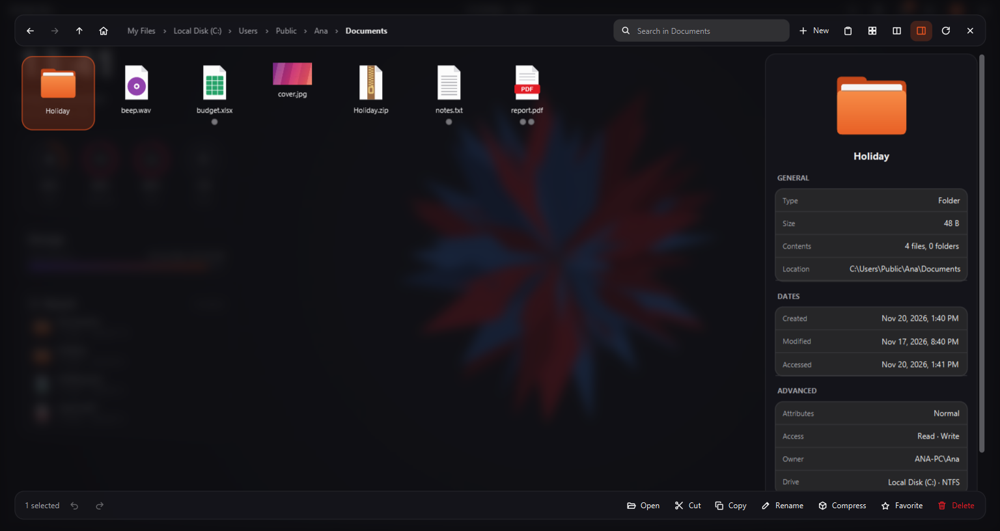

/
ENPT
A complete desktop for your files — browse, search, organise, protect and share them in one place. Offline, private and without adverts.

Each feature has its own page with screenshots.
Windows installer, portable app, Linux package.
Top bar, widgets, notifications, transfers, lock screen.
Places, selection, details, quick look, tabs, split view.
Copy, rename many at once, Trash, undo, ZIP, Send to.
Filters, search inside files, saved searches.
Coloured tags, your work day by day, rules for folders.
What fills the disk, folder map, duplicates.
Changes only, exact mirror or ZIP — automatic on plug-in.
Synced folders, WebDAV, USB drives, SMB servers.
An encrypted folder for private files.
Encrypted transfers to computers on your network.
textinvoice type:document modified:month
type:video size>500mb
*.pdf tag:Work
content:"monthly report"
Real screenshots of FileExp 3.11.0. Click a picture to see it in full size.
How FileExp is built, the rules every change follows, and where it is going.
Packages, layers, data store, threads.
Ant targets, tests, packaging, harness.
The rules that keep FileExp coherent.
How texts are translated, adding a language.
Version rules, definition of done, next versions.
Checklist from code to installer.
Highlights of every version.